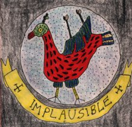

The cornucopia of delights that is Hooting Yard is offered to readers free of charge. That is as it should be. An unfortunate side effect, though, is that your dutiful editor lives in poverty. Really.
If you enjoy these pages, and have some disposable income (or, indeed, are a person of untold wealth), you may wish to show your appreciation by sending some money. Anyone who does so will become an official Friend Of Hooting Yard. Their names will appear on a list (unless anonymity is preferred), they will have my boundless gratitude, and I might even arrange for them to receive a certificate or badge or some other token.
Being an economically invisible member of society, I don't have an active bank account. If you wish to donate a sum, large or small, to keep the howling wolves from the doors of Haemoglobin Towers, simply copy and paste the paragraph below into an email, and I'll get right back to you.
Thank you.
Frank Key
Copy and paste this and send at once to hooting.yard@btopenworld.com
[This email address is defunct —Hooting Yard Archivists]
Dear Frank
Your plea has touched my heart-strings and I am now sobbing uncontrollably. I want to send you some money as a token of my appreciation, and by so doing, become a Friend Of Hooting Yard. Please, I beg of you, tell me what to do next!
Passionately yours,
[Insert your name & heraldic device - if applicable - here]
NOTE : Those few readers who were subscribers to Crunlop! have shown saintly patience, and probably think - with good reason - that I have forgotten them. I have not. Bear with me.